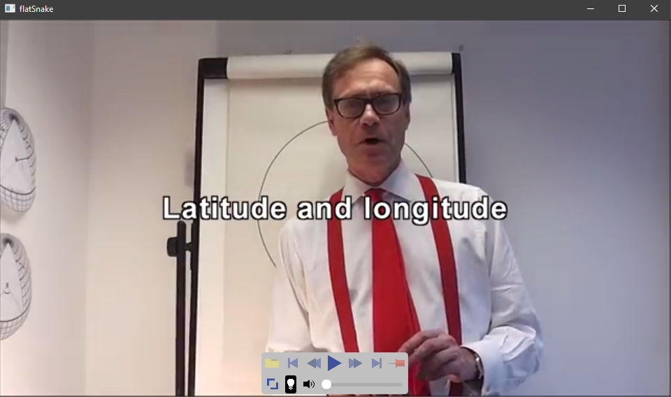
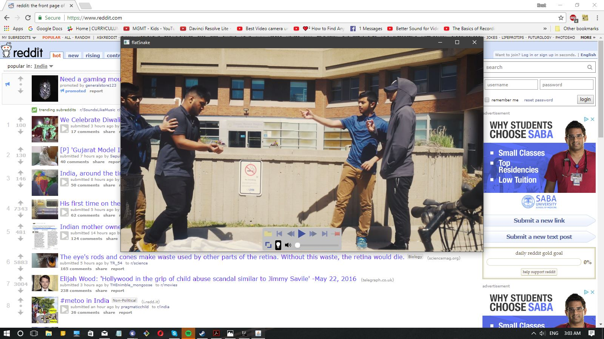
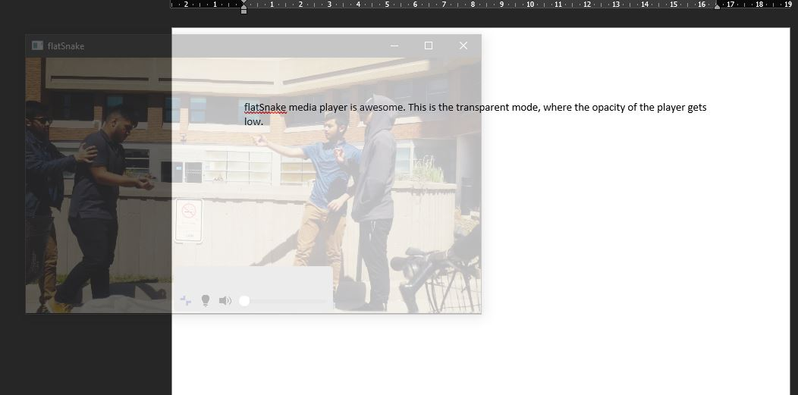

flatSnake is a minimalistic video player created by moi, Iram Rahman
Other than being a lightweight, sleek designed piece of software, this media player has features such as:
Pinned mode, where the video player is always on top of all the other windows
Opacity mode, where the video player is semi-transparent, allowing the user to see any applications behind
